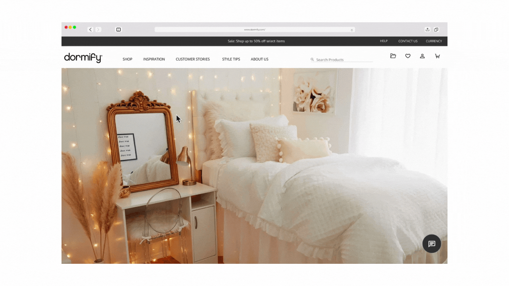
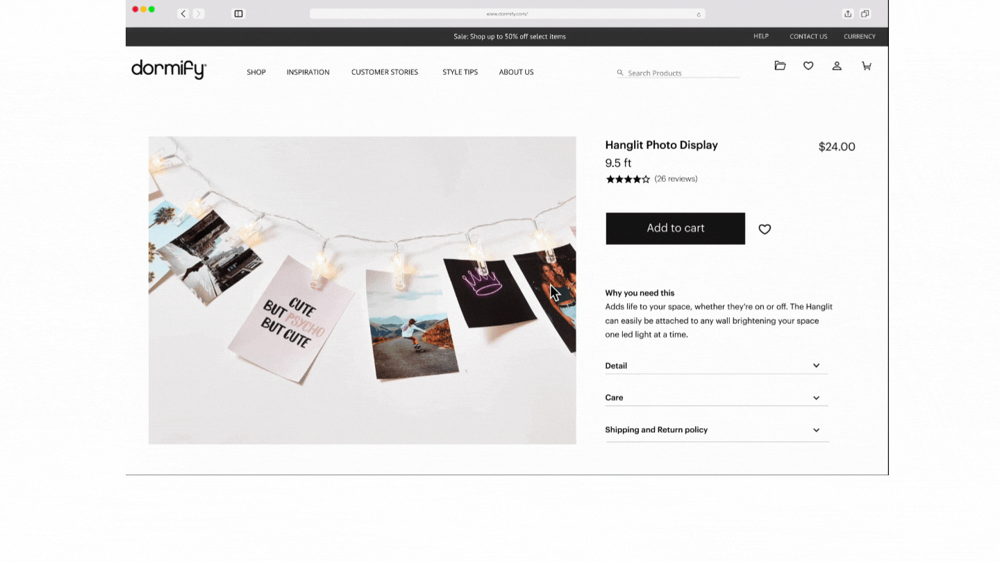

experience design, content design, user research
Dormify is an online website which aims to offer affordable furniture to people with
small spaces while still helping them make their spaces aesthetically pleasing. For this 4-week project
we were tasked with intervening in a problem area by constantly reframing of a problem statement. From
this resulted a solution that we believed ultimately meets the need
of the users.
Academic project
4-weeks
Spring 2022
Pinterest and Youtube are some of the popular places people visit when looking for
inspiration. Learning from Pinterest, we created a curated feed. The feed exist within the website
consisting of different media uploaded by dormify customers. It showcases how they styles their dormify
products and what they paired with it to give other inspiration and

The inspiration page is then generated from the student’s choices in
a dynamic layout consisting of videos, articles and images. Hovering over some images
reveals different media in order to keep the user engaged, and allow the student to use the
“+” to add it to a collection.

Clicking on the inspiration tab leads to a questionnaire to be filled
out. Selections will be made based on what they would like to see on their inspiration page.
This is done in order to create a personalized feed more tailored to the users interest.

The collections folder can be accessed by the icon in the navigation bar,
this allows the student to create and categorize their inspirations into boards. The hover state
offers the options to either edit existing boards or delete them.

Clicking on the inspiration tab leads to a questionnaire to be filled
out. Selections will be made based on what they would like to see on their inspiration page.
This is done in order to create a personalized feed more tailored to the users interest.
To begin our research we conducted an interview and survey with over 70 participant. For our
survey, we were interested in knowing how and what resources students used in decorating their room and if
the space constraints of the dorm room did pose a problem in doing this. From the result, we founf out that
63% of students do want a particular and feel to their room, but knowing where to start can be an issue and
so we geban to ask ourselves - How might we help students plan and decorate their spaces in a way that
suits them
CHALLENGES
Trying to frame the problem posed as a big issue and knowing where a possible design intervention
could be implemented. At first the solution felt appropriate but there was a challenge measuring the success
of it as we couldn't successfully recruit people to test the feature we had created
REFLECTION
This was the first UX project I had ever done. I remember feeling excited, but I also remember
feeling nervous. At the beginning, the concept of framing was something I found hard to grasp but through
constant practice, and a lot of HMW questions I think I was able to catch on. I also had a great time with
my team too. Team work was something I never really enjoyed prior to this project, but my teammates allowed
be to understand that with the right team it can be an amazing experience where you gain together, achieve
together, overcome little milestones and huge ones. I also realized that it’s the process that really
matters, and it was a process I truly enjoyed.